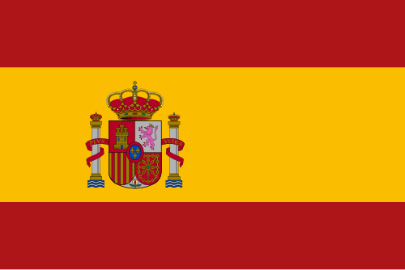

🟨 Term 2 — Question & Answer Mock Test 1
15 written questions on where you're from, where you live, nationalities and languages. Write a full sentence first, then open the arrow.
Q1. Answer in Spanish: ¿De dónde eres? (say you are from England)
▶ Answer & explanation
The question means: "Where are you from?" — say England. ✅ Model answer:
- 🇪🇸 Soy de Inglaterra.
- 🇬🇧 I am from England.
Q2. Answer in Spanish: ¿Dónde vives? (say you live in a small town)
▶ Answer & explanation
The question means: "Where do you live?" — say a small town/village. ✅ Model answer:
- 🇪🇸 Vivo en un pueblo pequeño.
- 🇬🇧 I live in a small town/village.
Q3. Translate into Spanish: I am Spanish but I live in London. (girl)
▶ Answer & explanation
The question means: Put the sentence into Spanish. ✅ Model answer:
- 🇪🇸 Soy española pero vivo en Londres.
- 🇬🇧 I am Spanish but I live in London. (Girl → española; pero = but.)
Q4. Translate into English: Vivo en una ciudad grande en el norte de Inglaterra.
▶ Answer & explanation
The question means: Put the Spanish into English. ✅ Model answer:
- 🇬🇧 I live in a big city in the north of England.
- 🇪🇸 ciudad grande = big city, el norte = the north.
Q5. Answer in Spanish: ¿Cuál es tu nacionalidad? (say you are British — you are a boy)
▶ Answer & explanation
The question means: "What is your nationality?" — say British (boy). ✅ Model answer:
- 🇪🇸 Soy británico.
- 🇬🇧 I am British. (A girl says británica.)
Q6. Answer in Spanish: ¿Qué idiomas hablas? (say English and a little Spanish)
▶ Answer & explanation
The question means: "What languages do you speak?" — English and a little Spanish. ✅ Model answer:
- 🇪🇸 Hablo inglés y un poco de español.
- 🇬🇧 I speak English and a little Spanish.
Q7. Translate into Spanish: I come from Scotland.
▶ Answer & explanation
The question means: Put the sentence into Spanish. ✅ Model answer:
- 🇪🇸 Vengo de Escocia. (also fine: Soy de Escocia.)
- 🇬🇧 I come from Scotland.
Q8. Translate into Spanish: I live on the coast in the south of Spain.
▶ Answer & explanation
The question means: Put the sentence into Spanish. ✅ Model answer:
- 🇪🇸 Vivo en la costa en el sur de España.
- 🇬🇧 I live on the coast in the south of Spain.
Q9. Translate into English: Hablo francés bastante bien y quiero hablar alemán.
▶ Answer & explanation
The question means: Put the Spanish into English. ✅ Model answer:
- 🇬🇧 I speak French quite well and I want to speak German.
- 🇪🇸 bastante bien = quite well, quiero hablar = I want to speak.
Q10. Look at the flag and write the country and nationality (boy) in Spanish.

▶ Answer & explanation
The question means: Name the country and the masculine nationality. ✅ Model answer:
- 🇪🇸 España (country); español (nationality, boy) / española (girl).
- 🇬🇧 Spain; Spanish.
Q11. Answer in Spanish: ¿Vives en una ciudad o en un pueblo? (say you live in a city)
▶ Answer & explanation
The question means: "Do you live in a city or a town?" — say a city. ✅ Model answer:
- 🇪🇸 Vivo en una ciudad.
- 🇬🇧 I live in a city.
Q12. Translate into Spanish: I am Welsh and I speak English and Welsh. (boy)
▶ Answer & explanation
The question means: Put the sentence into Spanish. ✅ Model answer:
- 🇪🇸 Soy galés y hablo inglés y galés.
- 🇬🇧 I am Welsh and I speak English and Welsh.
Q13. Translate into English: No hablo italiano, pero hablo español con fluidez.
▶ Answer & explanation
The question means: Put the Spanish into English. ✅ Model answer:
- 🇬🇧 I don't speak Italian, but I speak Spanish fluently.
- 🇪🇸 No hablo… = I don't speak…, con fluidez = fluently.
Q14. Answer in Spanish: ¿De dónde es tu familia? (say your mum is from Spain and your dad is from Ireland)
▶ Answer & explanation
The question means: "Where is your family from?" — Mum from Spain, Dad from Ireland. ✅ Model answer:
- 🇪🇸 Mi madre es de España y mi padre es de Irlanda.
- 🇬🇧 My mum is from Spain and my dad is from Ireland.
Q15. Write 3 sentences in Spanish about yourself: your nationality, where you live, and a language you speak.
▶ Answer & explanation
The question means: Write a short Term‑2 introduction. ✅ Model answer:
- 🇪🇸 Soy inglesa. Vivo en una ciudad en el sur de Inglaterra. Hablo inglés y un poco de francés.
- 🇬🇧 I am English. I live in a city in the south of England. I speak English and a little French.
- ✔️ Use Soy… / Vivo en… / Hablo… and change the words to fit you.
🏁 How did you do? ____ / 15
➡️ Next: Term 2 — Q&A Mock 2